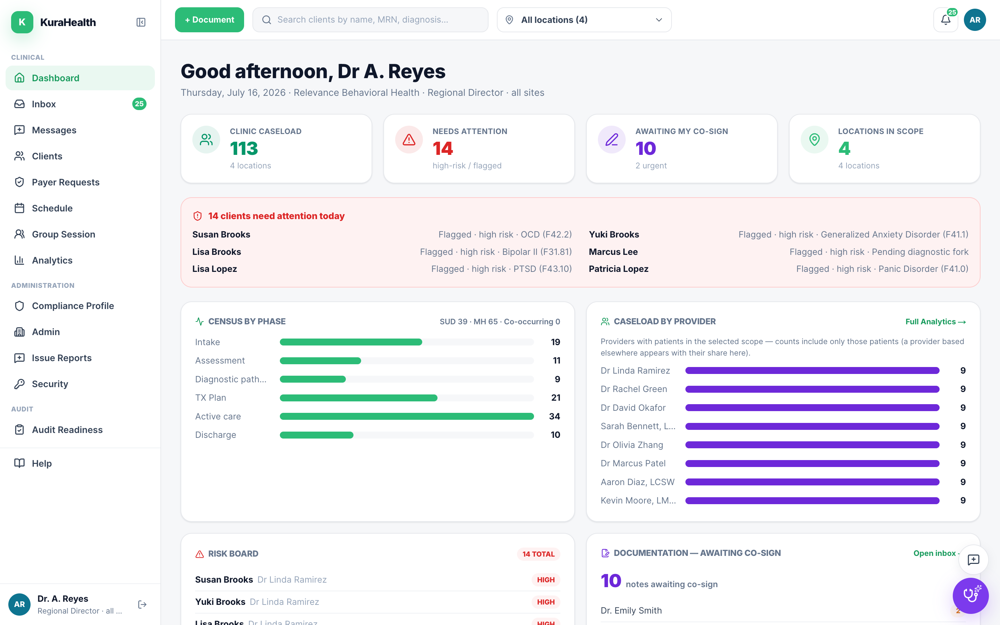
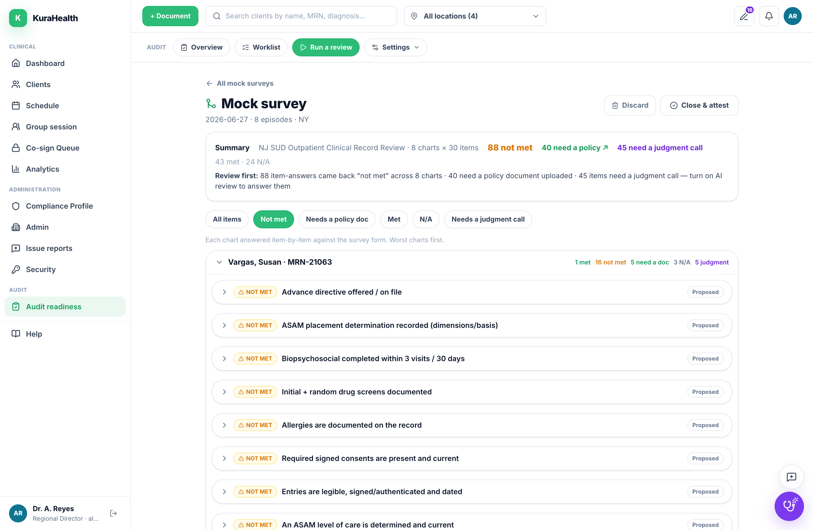
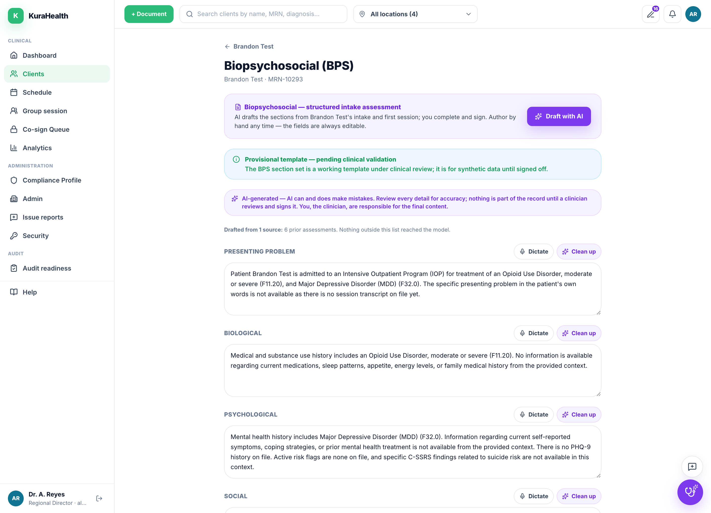
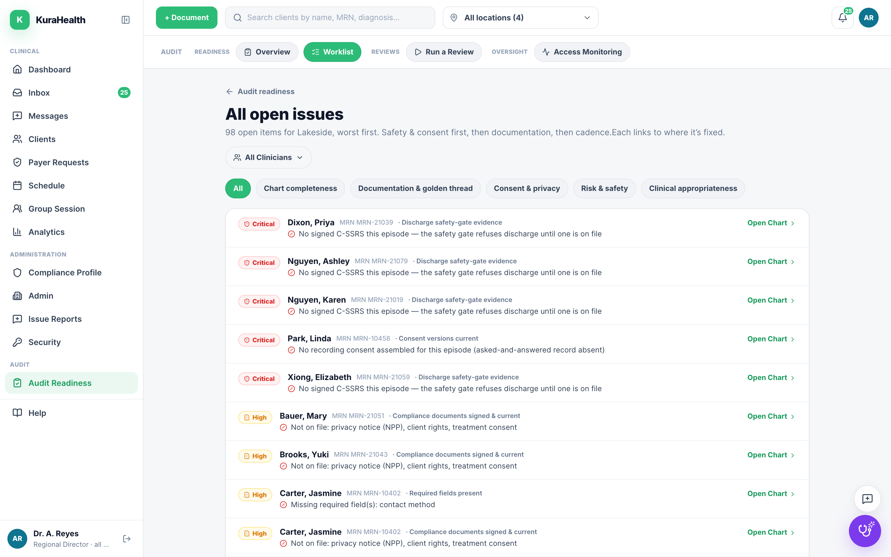
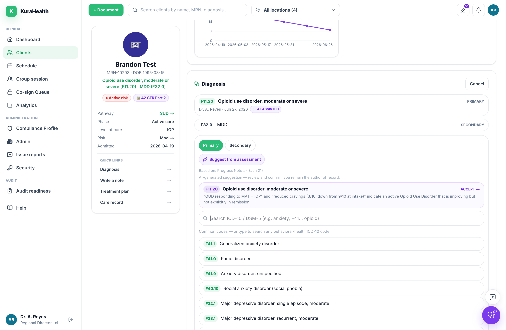
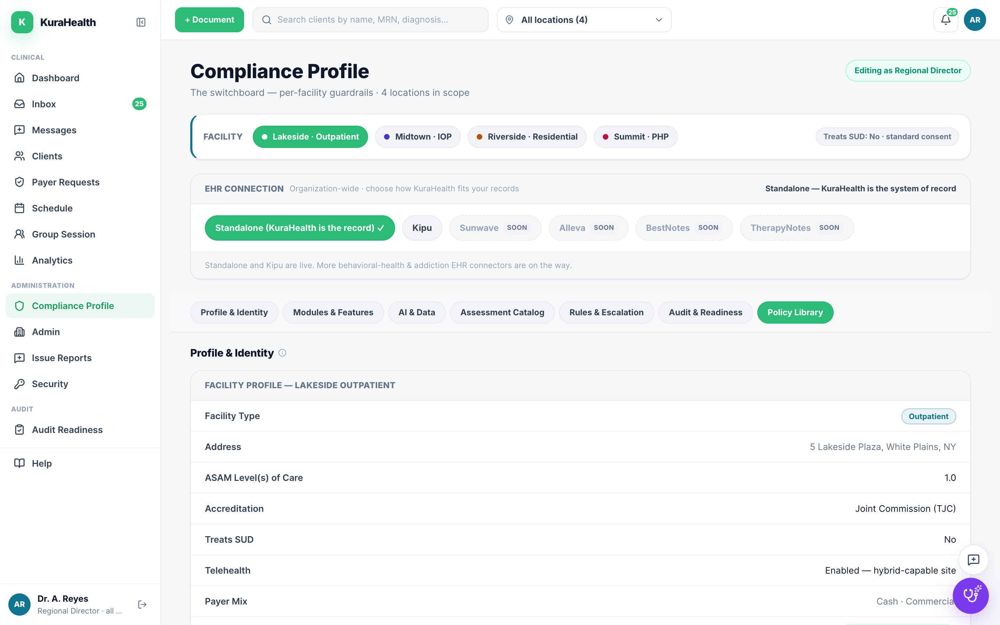

KuraHealth is the compliance brain for behavioral health: AI that documents the visit, codes it, and keeps every chart survey-ready — so your clinicians can focus on what matters, care. The clinician is always the author of record.

Clinicians lose hours a day to documentation while payers and accreditors demand ever more rigor. One denied claim trend or a failed state survey can shut a facility down — and the paperwork that prevents it is the same paperwork burning out your team.
Not a scribe bolted onto an EHR. One connected system where every step feeds the next — and the clinical record stays defensible the whole way through.
Point KuraHealth at a regulator's actual survey form. It reads each requirement, runs it against a sample of your charts, and answers question-by-question from the record — citing its evidence, and abstaining when it can't ground the answer. No confident-but-wrong “you’ll pass.”

Record the session, dictate after, type live, or document a phone call — the AI drafts a structured note in your format. The clinician's time shifts from writing to reviewing.

A survey-ready check flags any open chart missing a coded diagnosis, coverage, a risk screen, or required demographics — and AI suggests the ICD-10 from the signed chart, grounded and yours to confirm. You can’t bill what isn’t coded; you can’t pass a survey on a chart with holes.


State, payer mix, accreditation, 42 CFR Part 2, telehealth, co-signature — encoded as versioned, effective-dated data, not hard-coded. An operator with 100 clinics can change a rule for one site, one state, or the whole org without touching the rest.

The part nobody fakes: a system that can prove exactly what it did, and an AI that refuses to guess.
Every action — who, what, when, why — on the patient’s record. Voided, never silently deleted.
0 fabrication by design. Every figure is computed in code; the AI abstains when it can’t ground an answer.
SSN encrypted at rest, masked + audited reveal, idle auto-logoff, role-scoped multi-tenant isolation.
Substance-use confidentiality, signable consents, ROI, and accounting-of-disclosures built in.
~1,300 automated tests and an adversarial threat-model rubric on every change.
The AI accelerates the clinician; it never overrules them. A licensed signature is always the line.
See KuraHealth run your survey, draft your notes, and surface the revenue you’re leaving on the table — on your own charts.